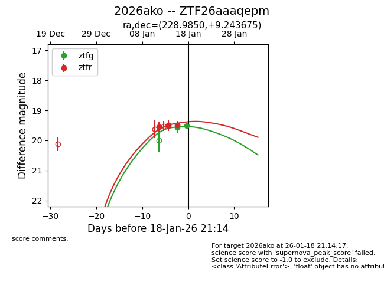
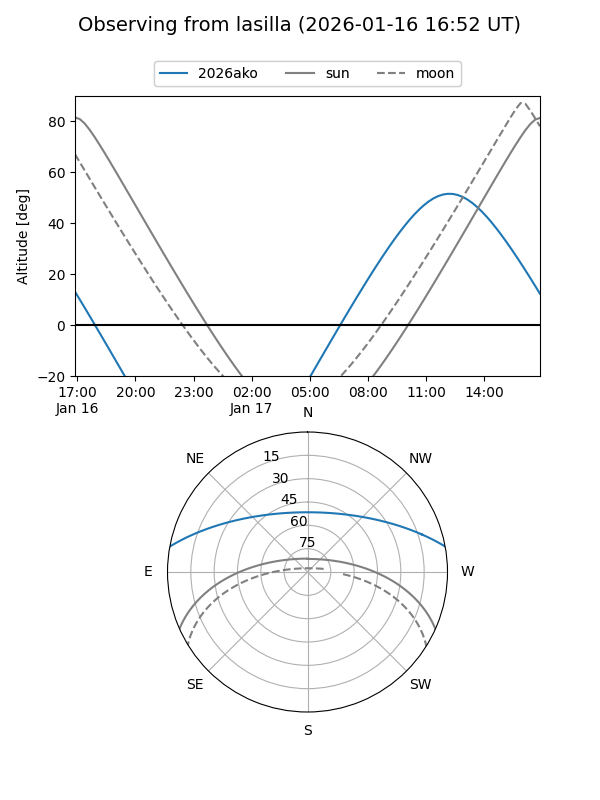
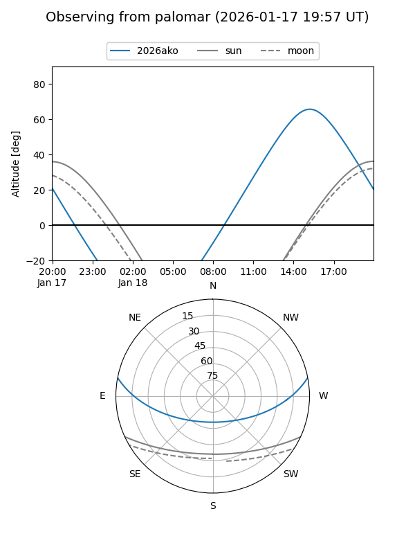

2026ako
Target 2026ako at 2026-01-18 13:40
Aliases and brokers:
FINK: link
Lasair: link
ALeRCE: link
TNS: link
YSE: link
alt names
ZTF26aaaqepm (ztf,fink_ztf)
2026ako (tns,yse)
Coordinates:
equatorial (ra, dec) = 228.9850,+9.24367
equatorial (HMS+DMS) = 15:15:56.41,+09:14:37.23
galactic (l, b) = (12.1731,+51.51568)
Flags:
Photometry:
last ztfg=19.51, ztfr=19.49
2 ztfg, 3 ztfr detections
Lightcurve

Visibility


Additional plots